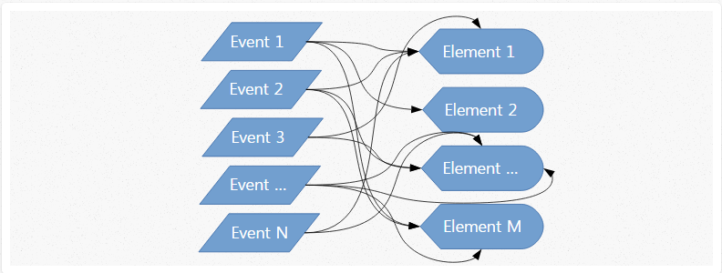
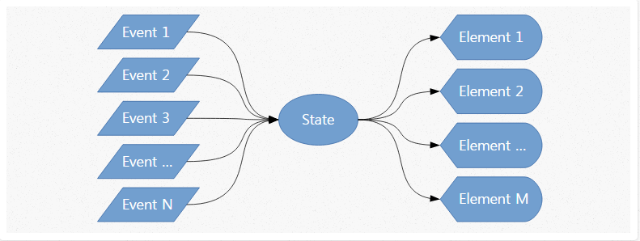

written by 이항희
사용자 커스텀 HTML 엘리먼트를 생성할 수 있는 Library
오로지 View 영역만 담당.
나머지는 뭘 써도 자유로움.
+ Backbone, jQuery, myCoolLibrary
<div>
<header>
<Logo />
<SearchBar />
<MainNavigation />
</header>
<Advertise />
<LoginForm />
<News />
<SubNavigation />
</div>무작정 쓰기보다, 흐름정도는 알아보고 써보자.
간단한 TODO APP 구현
추가 버튼을 누르면 바로 HTML 에 바로 추가함
중복 여부 또한 HTML 을 뒤져 중복을 체크함
삭제 버튼을 누르면 바로 HTML 에서 바로 삭제함
JS와 DOM API간의 연계는 상당한 비용이 드는 작업.
코드를 조금 고쳐서, HTML 접근을 최소화해보자.
처음 코드의 흐름
 http://hackflow.com/blog/2015/03/08/boiling-react-down-to-few-lines-in-jquery/나중 코드의 흐름
 http://hackflow.com/blog/2015/03/08/boiling-react-down-to-few-lines-in-jquery/코드의 흐름이 일관성있게 흐르게 된 것 뿐 아니라 상태를 활용한 여러가지 일이 가능하다.
잠깐...
오히려 updateUI가 호출될 때마다 전부 지우고 새로 그리기 때문에, 나쁠것 같은데...?
변경되는 부분만 새로 그리자!
그러기 위해서, 먼저 Virtual DOM 이라는 걸 만들고 가자.
이 객체 구조를 바탕으로 화면을 그리게 된다
상태와 이벤트는 모두 이 객체만을 조작한다.
필요할 때 최소의 부분에 최소의 접근으로 화면을 갱신
// 비교조정 작업.
var diff = function( prevVD, nextVD ) {
// 트리의 비교는 상당한 비용이 들기에 두가지 가정으로 복잡도를 최소화한다
// 1. 같은 클래스의 두 컴포넌트는 비슷한 트리를 생성하고,
// 서로 다른 클래스를 가진 두 컴포넌트는 서로 다른 트리를 생성.
// 2. 각 렌더 과정들 사이에 유지되는 엘리먼트에 고유한 키를 지정.
};기존에 있는 VirtualDOM 과 VirtualDOM 과 비교를 수행한다
트리 비교는 상당한 비용이 있는 작업이며, 최신 알고리즘을 적용한다 하더라도 O(n3) 의 복잡도.
트리 비교 알고리즘 자료.pdf (영문).몇가지 가정으로 트리 비교 수행
비교 알고리즘 구현까지 자세히 이해하면 더 좋겠지만... 대략적인 비교 알고리즘을 알아야 실제 React 코딩 시 컴포넌트의 배치 및 key 값의 지정 등으로 불필요한 UI 갱신을 막을 수 있다
End!